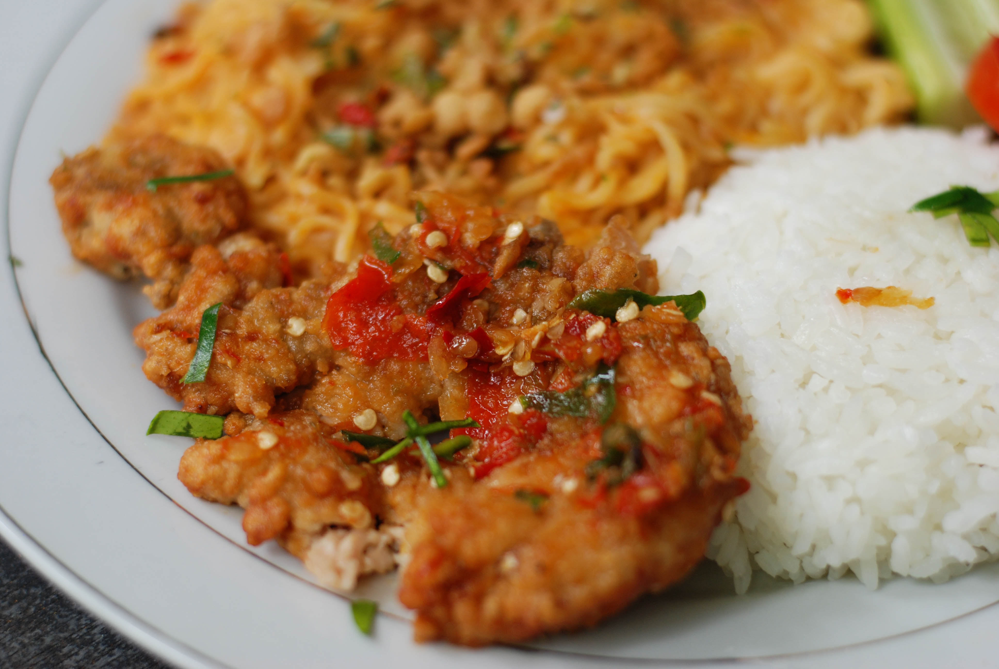

Jollof

Description
Jollof is a famous rice dish in Ghana loved by almost everyone in the country. A good jollof dish should be colorful with the right consistency of rice and good protein (either meat or fish)
There have been many arguments on social media mostly Twiiter about which country has the best Jollof (ps: it's Ghana ;) amongst some African countries;
Nigerians claim to have the best but with all that rice joined together? Come On!
This picture isn't an accurate one though, I couldn't get any free stock image of Jollof so I'll take a picture and update next time I eat Jollof :)
Ingredients
-
large yellow onions
-
vegetable oil
-
tomato paste
-
curry powder
-
ground ginger
-
chicken bouillon cubes
-
frozen mixed vegetable
-
diced tomato
-
long grain rice
- habanero pepper
- water
- garlic powder
- ground ginger
- teaspoon mixed dried herbs
Steps
-
Add onions and 2 tablespoons of oil to a blender and pulse until smooth. Transfer to a medium bowl.
Add the diced tomatoes, tomato paste, and habanero pepper to the blender, and pulse until smooth
-
Transfer to a separate medium bowl.
Heat the remaining ⅓ cup (80 ml) of oil in a large, heavy-bottomed pot over medium heat.
-
Once the oil is shimmering, add the onion puree and cook until the water has cooked out and the puree is starting to brown, about 10 minutes.
Stir in the tomato puree and add the curry powder, garlic powder, ginger, dried herbs, and crushed bouillon cubes.
-
Cook for 20-30 minutes, stirring occasionally, until the stew has reduced by half and is deep red in color.
Add the rice, mixed vegetables, and water. Bring to a boil, then reduce the heat to low and cover the pot with foil and a lid. Simmer for another 30 minutes, until the rice is cooked through and the liquid is absorbed.